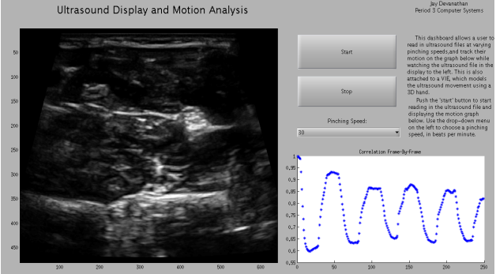
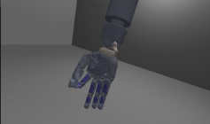

Projects
Muscle Ultrasound Imaging
The main project that I've worked on in high school pertains to muscle ultrasound imaging. The goal of the project was to make a software that would understand physical hand motions based on muscle ultrasound data. Over the years I worked in the internship, I designed experimentation for collecting muscle ultrasound data from a variety of subjects, and synchronizedthe software with a 3D virtual hand interface to emulate the extent of software comprehension of the hand movement.
  My project won 1st place in my school and regional science fair. My presentation poster of my analysis and results can be seen here. A comprehensive paper on my research with the Virtual Integration Environment can be found here.Resume
You can view my resume here.